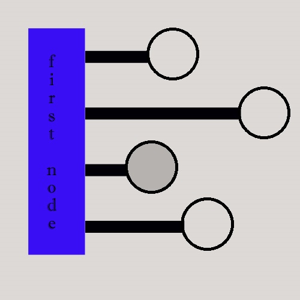

cardinal: counted; see nominal, ordinal, sentinel; note: not all infinite sets have the same cardinality (?)
cardinal number: used of counting; For example: "one", "two", "three"; see ordinal number
Catalan numbers: a sequence of numbers often used in recursion and combinatorics
Catalan
ChatGPT: Chat Generative Pre-trained Transformer; a chatbot
CHUD: Cannibalistic Humanoid Underground Dwellers
connectionless: a type of connection in which signals are treated indvidually
connection-oriented: establishes a connection object (a software construct) before transmission
continuous: assuming an infinite number of real values (within an interval, which may be ∞); floating-point;
examples: height, weight, temperature (there are upper and lower limits, but precision can always be carried out to another decimal place)
note: Has "Absolute Zero" ever been reached?
converge: meet
cryptocurrency: anonymously-sourced currency; money whose source is supposedly untraceable
culling: removing background objects (points, lines) that wouldn't be seen anyway (to conserve resources)
data mining: digging for ___________?
deadlock: when two processes cannot proceed, because each is waiting for the other to do something; see starvation
DEC: Digital Equipment Corporation, was acquired by Compaq, which became part of HP
delegate: function pointer
DEVO: a technology-driven rock band; "de-evolution"
Dijkstra's algorithm: (c. 1956) uses the weights/distances of edges to find the shortest path between nodes of a network
discrete: distinct; "finite of a countably infinite set" (?); examples: number of cars in a parking lot, roll of dice
dissociate: disconnect; differentiate
diverge: separate
double buffering: often used in graphics, switching between two or more frame buffers
to allow picture composition to be done simultaneously with picture display
eminent: famous
eminent domain: the power to take private property for public use
engineering motto: "If it ain't broke, don't fix it."
enumerate: to assign a number to; for example: "blue=1", "red=2", "yellow=3"
eunuchs: castrated men
exception: error
Fake, Caterina: businesswoman and co-founder of various technology companies, including Flickr
fallacy: a false premise constructed to produce a correct result
Fiorina, Carly: American businesswoman and politician
freemium: a business model in which basic features are free and more advanced features are priced
function: method; relationship
fuzzy logic: involving more than one variable and therefore more than one solution; often uses sets of data
gobbledygook: unintelligible; for example, a memory address: "#6545.4$89*&#"
gold: element #79, "Au"
Gold Coast: a name used for several areas around the world, including a part of West Africa, a part of Chicago and a hotel/casino in Las Vegas
greedy algorithm: chooses the best option at the moment, "short-sighted"
hologram: a three-dimensional image created via the interference of photon beams
iff: if and only if
Iger, Robert: current CEO of Disney
imminent: happening soon
immutable: unchangeable; a variable whose value cannot be changed once set, although its reference might be changeable, depending on the
language being used; compare constant
impute: to populate with arbitrary data; the average for that particular field is often used
integral: whole or contributing to the whole
isthmus: between two bodies of water, a small strip of land connecting two larger pieces of land
jargon: esoteric, idiosyncratic or proprietary language
Java: a programming language similar to C++, but with "wrapped" (unavailable) hardware pointers, making it safer (and slower) than C++
JavaScript: a website programming language unrelated to Java
Kate the Chemist: Kate Biberdorf, a chemist
Komando, Kim: radio hostess
Kubow, Ania: computer scientist and internet personality
Kuehl, Andy: drifter, drinker, womanizer and unofficial King of the Delta Blues
lambda function: a small, simple function; in math, pertaining to abstraction; see anonymous function
Lanier, Jaron: computer scientist and musician
Lovelace, Ada: British mathematician (1815-52)
macro: a sequence of instructions that can be assigned to a single key; in MS Office, the MacroRecorder is used to save a sequence
of keystrokes or mouseclicks as a macro (or the macro can be programmed using Visual Basic)
macro virus: malware attached to a document and run whenever the document is opened
mainframe: a proprietary server computer, sometimes called a midrange; for example, the IBM AS/400 (c. 1990s);
clients were/are called dummy terminals
Mayer, Marissa: spokeswoman and former CEO of Yahoo!
memoization: another name for caching, buffering, paging; more specifically, memoization maintains a data structure of subproblem solutions;
It is often used in recursion to store previously calculated solutions. When a subproblem is encountered again, the algorithm simply reads the solution
from the maintained data structure, instead of re-calculating.
Mickey Mousing: the cinematic/animation technique of matching sound to motion. For example, "There
walks Mickey, BOOM, BOOM, BOOM, BOOM!"
mocap: motion capture
Nadella, Satya: current CEO of Microsoft
Nash, John: mathematician who won the 1994 Nobel Prize in economics
native: natural; original inhabitant
nibble: half a byte; 4 bits
nominal: named; categorical; can be enumerated, but is not numeric by nature
nsfw: not safe for work
number theory: the study of integers
numberific: when all the numbers are as hoped for; when the numbers make perfect logical sense
numerical analysis: the study of the uses of numbers
numerology: the puns of math
ordinal: from the word "order"; pertaining to rank
ordinal number: used for ordering; example: "first", "second", "third"; see cardinal number
orthodox: usual
out-of-bounds error: attempting to access a non-existent array element; [!][0][1][2][3][4][!]
oxymoron: a contradictory phrase; for example, "mortally wounded"
paradox: a conclusion so unexpected that it is difficult to accept even though every step in the reasoning is valid
parallax: a displacement or difference in the apparent position of an object
parameter: a datum that is "passed" into a function; argument
parse: to break into parts; see substring
pcAnywhere: remote administration software made by Semantec, discontinued circa 2014
permute: alter, especially pertaining to order; arrange in all possible ways
phonon: a particle of sound
photon: a particle of light
pipe: to "feed" into; "|"
Powell, Jay: current chair of the Federal Reserve
protocol: standard
recurrence relation: an equation or inequality that describes a member of a sequence by examinging previous members in the sequence
(i.e., by examining HOW a number in a sequence was calculated, subsequent numbers in the sequence can be calculated); For example, in factorial and
Fibonacci sequences, the nth term in the sequence is described via previous terms in the sequence,
going backward: (n-1), (n-2), (n-3), going forward: (n+1), (n+2), (n+3)
recurse: to call oneself
redundant: duplicate
reservoir: storage, supply, collection, reserve
Restaurant Row: an area near Lambeau Field in Green Bay with alot of eateries; Oneida Street
seminal: influencing later events; from the word "semen"
sentient: capable of emotion
sentinel: a variable used as a flag; trigger; guard
silicon: chemical element 14
Silicon Creek: an area of Atlanta with alot of computer companies
Silicon Fen: an area of Cambridge, England with alot of computer companies
Silicon Glen: an area of Scotland with alot of computer companies
Silicon Sandbar: an area of Long Island, NY with alot of computer companies
snake eyes: the lowest-valued roll of two standard dice; the value of the roll is 2
spaghetti code: unstructured, often with the use of "goto"s
sparse matrix: a matrix with many zeroes
spectrum: range
squircle: "square" + "circle"
starvation: when a task can't get access to a necessary resource, such as a block of memory
stoic: without emotion
stream: a steady, continuous flow
string: textual data
substring: a string within a string
supervised learning: with hints! (labels)
taxonomy: categorization
tertiary: pertaining to three
thrashing: a hardware problem caused by excessive, overlapping paging (swapping) between temporary memory (RAM) and the hard disk
topology: the spacial arrangement of objects, the structure, the preservation of properties after deformations
For example, after stretching ... Is the hole still there? Hey, what happened to my hole?!?!
tree: a type of graph with the root at the top
unsupervised learning: no hints!
utility: functional rather than attractive
voxel: a 3-d pixel; volumetric pixel
Whitman, Meg: American businesswoman and politician
wysiwyg: what you see is what you get
zero sum game: a game in which the scores sum to zero; in a two-player zero sum game, whatever one player wins, the other player loses
other factors could include: 1. weighted (a value added to each unit, requires more processing) 2. duplicates allowed ("unbounded") 3. fractional (objects broken into smaller objects) 4. if the numbers are uniform (close together on the number line) vs. wildly spread
Sometimes you might just want a quick solution. The greedy algorithm takes less processing.
The dynamic algorithm requires more processing, but results in the best solution.
Perhaps the difference between how the algorithms work concerns the number of passes they make.
For example, let's look at this set of numbers: [8, 3, 1, 7, 6].
The greedy algorithm will hold the first number, add the 1 and then quit when it gets to the end.
That doesn't make ALL possible comparisons, because ... what about letting the 8 go?
(In other words, what about solutions that DON'T include the 8?)
The dynamic algorithm makes as many passes through the set of numbers as it takes to compare
ALL possible permutations. In this case, the dynamic algo chooses 3 + 7.
AND 3 + 1 + 6? Sheesh! Why didn't you tell me!
Excellent_Animation_Tutorial_!
YouTuber: "Keelan Jon" He doesn't talk too fast and he explains the little things that could otherwise throw off the animation.

an alternative "blocky" visualization of the start of Dijkstra's algo (shortest path)
after the first shortest edge is found, that edge's node becomes the rect on the left (shift the diagram)
"The only problem that can't be solved by another layer of indirection is the problem of too many layers of indirection."